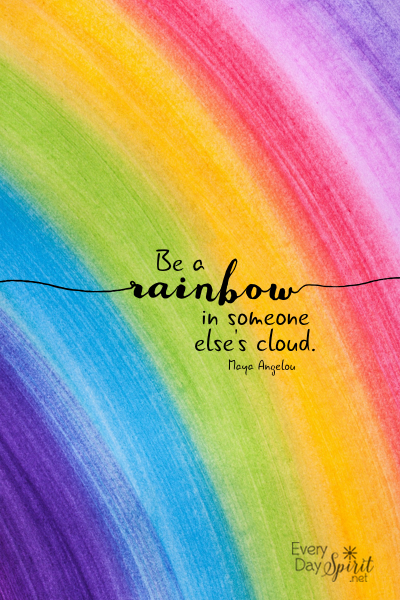

Ancak mavi kombinasyonu zor bir renk olduğu için genellikle insanlar bu rengin kombinasyonunda hata yaparlar. Mavi rengi kırmızı, sarı, beyaz, kahverengi, gri, turuncu ve pembe ile kombinlenebilir. Bu renkler kullanılacak olan mavinin tonuna göre de revize edilerek uyumlu hale getirilmelidir.
